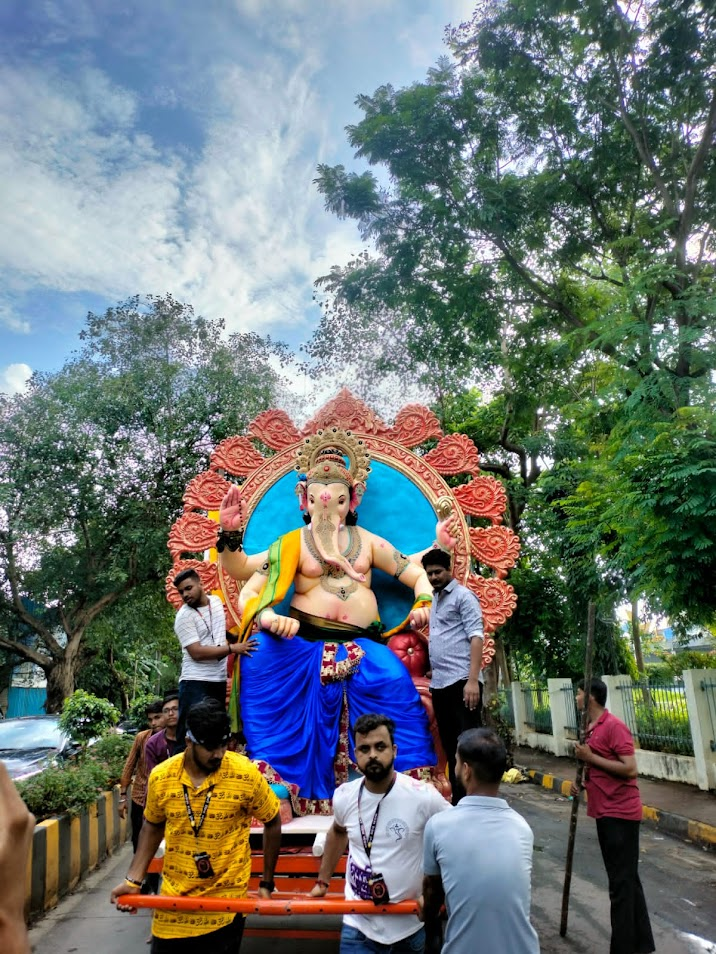

About Surya Mitra Mandal

Surya Mitra Mandal — A Legacy of Devotion
The Surya Mitra Mandal was established in the year 2001 by a group of local residents in Singh Estate, Kandivali East. What started as a small community celebration with humble beginnings has grown into one of the largest Ganesh Utsav celebrations in the Mumbai suburbs.
The name "Charaja" refers to a traditional title of honor that the local community bestows upon revered idols. Over the years, it has become a cherished name synonymous with the Ganesh Utsav celebrations in the area.
"The Surya Mitra Mandal is not just a Ganesh festival; it's a cultural phenomenon that binds the community together, celebrates devotion, and showcases the spirit of Mumbai's suburban neighbourhoods."Get Involved →
What Drives Us
Grand Celebrations
Organize large-scale, culturally-rich Ganesh Utsav celebrations that bring the community together.
Social Impact
Run health camps, blood drives, and charitable initiatives that benefit the local community year-round.
Cultural Preservation
Keep alive the traditions, music, arts, and spiritual practices of Ganesh Chaturthi for future generations.
Festival Highlights
Grand Processions
The Ganesh Visarjan processions include dhol-tasha, trumpets, and dancing by thousands of devotees — not just a religious ritual but a cultural extravaganza.
Spectacular Decorations
The pandal is decorated elaborately every year with intricate lighting, vibrant colors, and creative themes — a visual treat for all visitors.
Eco-Friendly Practices
We use eco-friendly clay idols and non-toxic colors — a commitment to celebrating our festival while protecting the environment.
Community Unity
People from all communities join the celebrations, fostering a spirit of unity and inclusiveness across Singh Estate and beyond.
Health Initiatives
Free medical checkups, blood donation camps, and hygiene drives make us a socially responsible celebration hub.
Celebrity Visitors
Our grandeur attracts celebrities, politicians, and dignitaries who visit the pandal to pay their respects to Lord Ganesha.
Our Journey Through the Years
2001 — The Beginning
Surya Mitra Mandal founded by local Singh Estate residents. First small-scale Ganesh Utsav celebrated with community enthusiasm.
2005 — Growing Roots
Festival expanded with first organized cultural program. Community membership doubled. Blood donation drive initiated.
2010 — Landmark Year
First grand procession with over 1,000 participants. Mandal recognized as one of the top Kandivali Ganesh celebrations.
2015 — Eco Commitment
Switched to eco-friendly clay idols and non-toxic colors. Launched annual free medical camp during festival week.
2020 — Resilience
Adapted celebrations safely during challenging times, keeping community spirit alive with virtual programs and smaller gatherings.
2024 — Grand Revival
Record participation with over 15,000 devotees. New website launched. Social media presence grew to thousands of followers.